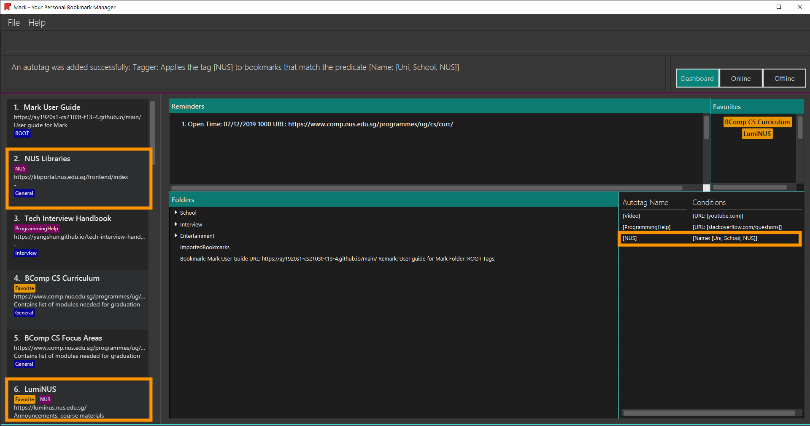
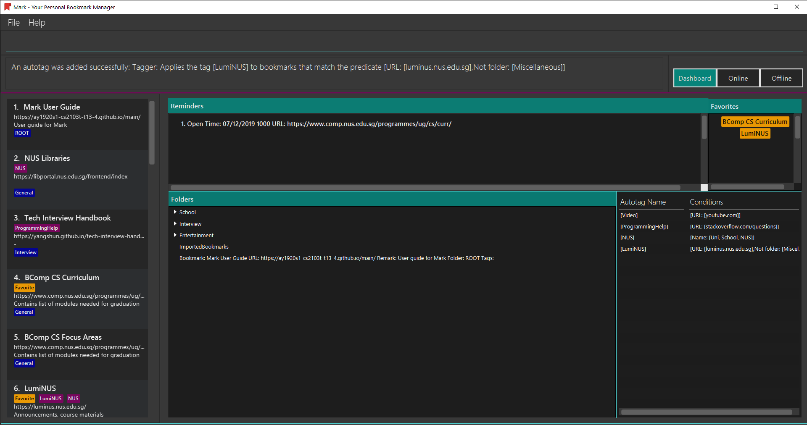
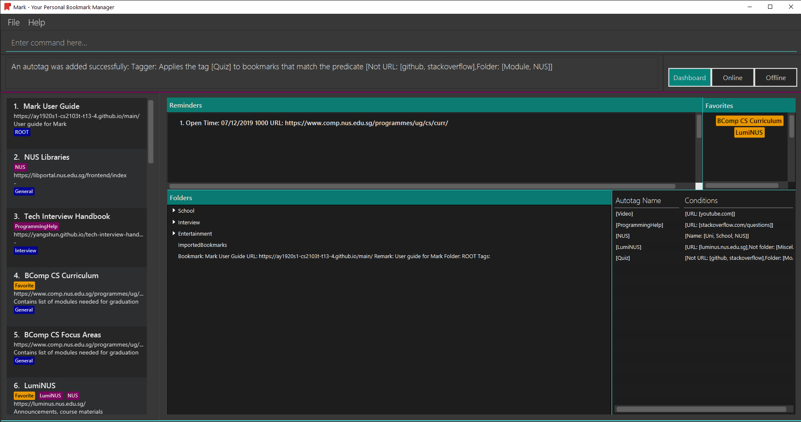
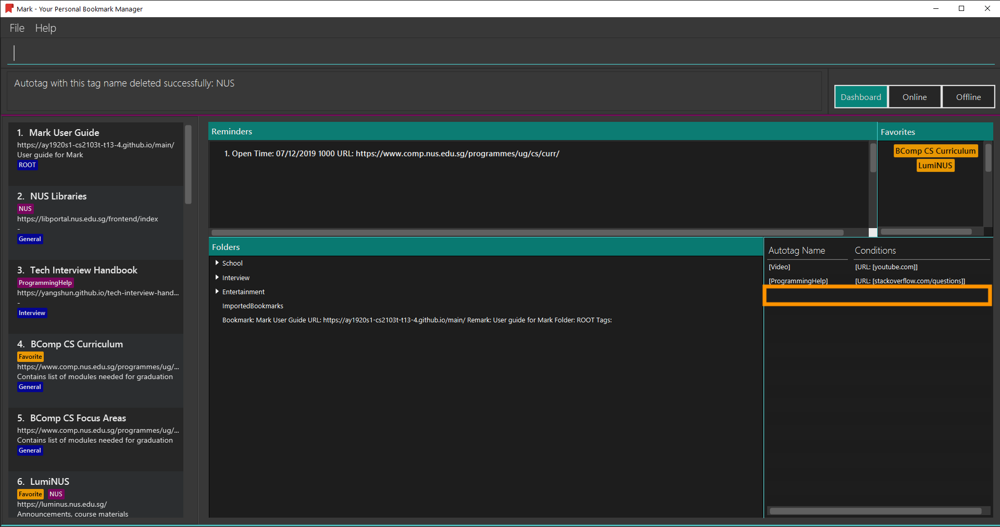

Overview
My team of 5 software engineering students was tasked with morphing an existing Command Line Interface (CLI) desktop application into a useful application for a specific target group. We chose to create a bookmark manager application named Mark, which aims to help computing students manage their web browsing activities. Mark was conceptualised and implemented over a period of 8 weeks. It is written in Java and has a Graphical User Interface (GUI) that was created using JavaFX.
This is what Mark looks like:

My role as a developer was to design and implement the autotag feature. I also implemented the import and export
features and contributed to various team tasks.
The following sections illustrate these contributions in more detail and showcase documentation that I added to the User and Developer Guides in relation to the enhancements made.
Summary of contributions
This section provides a summary of my contributions regarding code, documentation and other team-related matters.
Enhancements added
-
Major enhancement: added the ability to tag bookmarks automatically based on specific conditions
-
Description
-
The
autotagmechanism applies autotags to bookmarks based on a set of criteria, known as autotag conditions. Mark contains a list of predeclared autotags, and the user can also create custom autotags if desired.
-
-
Justification
-
It is troublesome for users to have to manually tag similar bookmarks individually. The autotag feature allows them to do so in a single step. They can also set up an autotagging system to categorise bookmarks automatically.
-
-
Highlights
-
Designing this feature required significant planning regarding the design of the automatic tagging mechanism and how autotags should be stored.
-
Implementing this feature involved development in all components of the project: starting with creating the mechanism in the Model and Logic components, then enabling the saving of autotags in Storage, and finally making autotags visible in the UI component.
-
-
Credits
-
One of my team members suggested a more elegant way to combine autotag conditions, which I adapted.
-
-
-
Minor enhancement: added the ability to export data from and import bookmarks into Mark.
-
Description
-
The
exportcommand saves all of Mark’s data to a given file on the hard disk. -
The
importcommand imports bookmarks from a specified file into Mark.
-
-
Justification
-
Users may want to preserve old bookmarks without cluttering their current Mark dashboard. This can be done by exporting all current Mark data to a file on the hard disk. Bookmarks can then be imported from any previously-saved file whenever they are needed.
-
-
Highlights
-
The
importcommand required different elements in Mark to be considered, including folders. While the final choice of implementation only imports bookmarks, the handling of other components had to be considered when planning this enhancement.
-
-
Code contributed
Please click on the following links to see a sample of my code:
Other contributions
-
Project management:
-
Facilitated weekly team meetings to discuss the project’s progress
-
Managed releases
v1.2.1on GitHub
-
-
Enhancements to existing features and code-related contributions:
-
Documentation:
-
Made cosmetic changes to contents of the (README page) and Developer Guide: (Pull request #42)
-
-
Community:
-
Reviewed team members' Pull Requests and offered suggestions to increase clarity of messages and improve code quality
-
Reported bugs and suggestions for other teams in the class (TBC)
-
Contributions to the User Guide
Given below is a sample section that I contributed to the User Guide. It showcases my ability to write documentation targeting end-users. |
Autotags
Autotags are tags that will be automatically applied to bookmarks which match their respective autotag conditions. You can view the details of existing autotags in the autotag panel at the bottom-right of the Dashboard tab, as seen below.

The commands in this section provide a way to add and remove autotags in Mark.
Creating an automatic tag: autotag
If you are looking to tag a group of similar bookmarks without manually editing each one, you
can use the autotag command to create an autotag that will do that for you. You can define
the group of bookmarks to be tagged using conditions, which describe the key characteristics
of those bookmarks.
| Conditions fall into two categories: normal conditions, which are characteristics that bookmarks to be tagged should match, and not-conditions, which are conditions that bookmarks should not match. |
You can specify conditions relating to the name, URL, and/or folder (also known as attributes) of a bookmark. It is also possible not to specify any condition for an attribute if the attribute is not relevant. However, an autotag must have at least one condition specified; otherwise, it would automatically tag all your bookmarks!
Format: autotag TAG_NAME [n/NAME_KEYWORD]… [u/URL_KEYWORD]… [f/FOLDER]…
[nn/NOT_NAME_KEYWORD]… [nu/NOT_URL_KEYWORD]… [nf/NOT_FOLDER]…
For example:
-
To add a new autotag, input
autotag NUS n/NUS n/School n/Uniinto the command box.
-
You can then check that an autotag named
NUSwith three name conditions (NUS,School, andUni) has been added to the autotag panel of the Dashboard. Also, notice that bookmarks with names that containNUS,SchoolorUninow have the tagNUS.
There are several restrictions on the usage of command parameters:
If an autotag’s conditions contradict each other, no bookmarks will be tagged.
E.g. an autotag with conditions u/github.com/mark nu/github.com/ effectively does nothing as no
bookmark can have a URL containing github.com/mark and not github.com.
|
|
If multiple conditions are specified, bookmarks are matched in the following way:
* For normal conditions ( |
Other examples:
-
autotag LumiNUS u/luminus.nus.edu.sg nf/MiscellaneousCreates an autotag named
LumiNUSwhich tags all bookmarks with URLs containingluminus.nus.edu.sgthat are not in the folderMiscellaneous. -
autotag Quiz f/NUS f/Module nu/github nu/stackoverflowCreates an autotag named
Quizwhich tags all bookmarks that are either in the folderNUSor in the folderModule, and that do not contain any of the keywordsgithuborstackoverflowin their URLs.
Editing an automatic tag: autotag-edit
If you want to modify an autotag, you can use the autotag-edit command to edit the autotag’s
name and/or conditions.
This is essentially a shortcut for autotag-delete followed by autotag-add.
|
Format: autotag-edit TAG_NAME [t/NEW_TAG_NAME] [n/NAME_KEYWORD]… [u/URL_KEYWORD]… [f/FOLDER]…
[nn/NOT_NAME_KEYWORD]… [nu/NOT_URL_KEYWORD]… [nf/NOT_FOLDER]…
For example:
-
To modify the autotag named
NUS, typeautotag-edit NUS t/University f/School f/General f/Modules f/CS2103T
-
You can then observe that the autotag
NUShas been renamedUniversity, and its folder conditions now include the folderCS2103T.
The parameter constraints are similar to those for the autotag command,
with the following differences:
Other examples:
-
autotag-edit Quiz u/luminus.nus.edu.sg u/quiz nu/attempt
Modifies the autotag
Quizsuch that it tags bookmarks with URLs that contain either of the keywordsluminus.nus.edu.sgorquiz, but do not contain the keywordattempt. -
autotag-edit Quiz t/Quizzes
Modifies the name of the autotag
Quizsuch that it now tags bookmarks with the tagQuizzesinstead ofQuiz.
Deleting an automatic tag: autotag-delete
If you no longer need an autotag, you can delete it from Mark using the autotag-delete
command. None of your existing tags are affected when an autotag is deleted.
Format: autotag-delete TAG_NAME
For example:
-
If you want to delete the autotag
NUS, inputautotag-delete NUSinto the command box.
-
You can then check that the autotag named
NUShas been deleted from the autotag panel of the Dashboard. In addition, no bookmarks have been modified.
Parameter constraints:
Example:
-
autotag-delete Quiz
Deletes the autotag that would have tagged bookmarks that match its conditions with the tagQuiz. No existing tags are removed, but new and edited bookmarks will no longer be automatically tagged withQuiz.
Contributions to the Developer Guide
Given below is a sample section I contributed to the Developer Guide. It showcases my ability to write technical documentation and the technical depth of my contributions to the project. |
Autotag feature
Implementation
The autotag mechanism is facilitated by the main class AutotagController. It stores and manages a list of
SelectiveBookmarkTaggers, which represent autotags in the Model.
AutotagController implements the following operations:
-
AutotagController#hasTagger(SelectiveBookmarkTagger)— Checks whether the controller contains the given tagger. -
AutotagController#addTagger(SelectiveBookmarkTagger)— Starts managing the given tagger. -
AutotagController#applyTaggersToList(List<Bookmark>)— Tags the bookmarks in the list using all relevant taggers. -
AutotagController#applyTaggers(Bookmark)— Tags the bookmark using all relevant taggers.
The first three operations are exposed in the Model interface as Model#hasTagger(SelectiveBookmarkTagger), Model#addTagger(SelectiveBookmarkTagger),
and Model#applyAllTaggers() respectively.
Given below is an example usage scenario and how the autotag mechanism behaves at each step.
Step 1. The user opens the application with an existing list of bookmarks and no autotags.
Step 2. The user executes the command autotag Help u/stackoverflow.com/questions to add an autotag that tags all
bookmarks from stackoverflow.com/questions with the tag Help.
-
A
SelectiveBookmarkTaggeris created with aBookmarkPredicateand aTagnamed Help. The predicate’s URL keyword is stackoverflow.com/questions. -
The new autotag is applied to bookmark
b2, which matches theUrlContainsKeywordsPredicate. This is carried out by replacingb2with a copy of itself (b3) that also contains the tag Help.
Step 3. The user then executes the command add n/JavaFX new scene u/https://stackoverflow.com/questions/29080759/
to bookmark a question on StackOverflow.
-
A new bookmark with the name
JavaFX new sceneis created. -
This bookmark matches the conditions for the previously added autotag, so it is tagged Help.

The following diagrams show how the autotag command works in more detail.
The parsing of an autotag command is done in a similar way as shown in the first half of the
sequence diagram for the undo command. This result in the creation of an
AutotagCommand that contains a SelectiveBookmarkTagger to be added to the Model.
When AutotagCommand#execute(model, storage) is called, the command first checks whether the given model contains
the command’s SelectiveBookmarkTagger (also known as tagger).
If it does not, tagger is added to model, and all taggers in model are then applied to the bookmarks in model.
Finally, the current state of Mark is saved with a message that indicates the successful execution of the
autotag command. This sequence of operations is illustrated in the following diagram:
AutotagCommandThe next sequence diagram provides more details of how taggers are applied to bookmarks in Mark.
Model#applyAllTaggers()| The sd frame should cover the whole diagram, but due to a limitation of PlantUML, it does not. |
With reference to the above diagram, the Model
first calls the method VersionedMark#applyAllTaggers(). VersionedMark then obtains its list of bookmarks, and
passes the list to its AutotagController to apply all SelectiveBookmarkTaggers to the list.
The AutotagController then iterates through all the bookmarks and taggers, and applies tags to bookmarks using the method
SelectiveBookmarkTagger#applyTagSelectively(Bookmark). A new list of bookmarks is returned, which VersionedMark
sets as its bookmark list.
The following activity diagram summarizes what happens when an autotag is added (assuming valid user input). A similar mechanism is used to tag bookmarks when a bookmark is added or modified.

Design Considerations
The following aspects of the autotag mechanism were considered when designing the autotag implementation.
Aspect: How autotags are applied
-
Alternative 1 (current choice): Iterate through each autotag and bookmark, then apply tags to all bookmarks that match.
-
Pros: Easy to implement.
-
Cons: May have performance issues in terms of runtime, as bookmarks can be checked multiple times.
-
-
Alternative 2: Check for changes in the bookmark list then edit tags accordingly.
-
Pros: Will be faster if most bookmarks are unchanged.
-
Cons: More complicated to implement.
-
Aspect: How to apply taggers to a bookmark list in Mark
-
Alternative 1: Modify individual bookmarks when adding tags.
-
Pros: Eliminates the need to reset Mark’s bookmark list whenever taggers are applied.
-
Cons: Can cause unanticipated changes in other parts of the Model.
-
-
Alternative 2 (current choice): Replace the whole bookmark list with a new list of bookmarks, some of which have been tagged.
-
Pros: Simple to implement, ensures immutability of bookmarks.
-
Cons: Inefficient to construct a new list each time a single bookmark is tagged.
-
-
Alternative 3: Replace only those bookmarks that were tagged.
-
Pros: Minimises performance issues from creating a new bookmark list.
-
Cons: More complicated to implement.
-